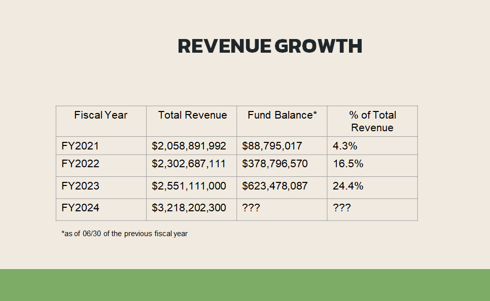
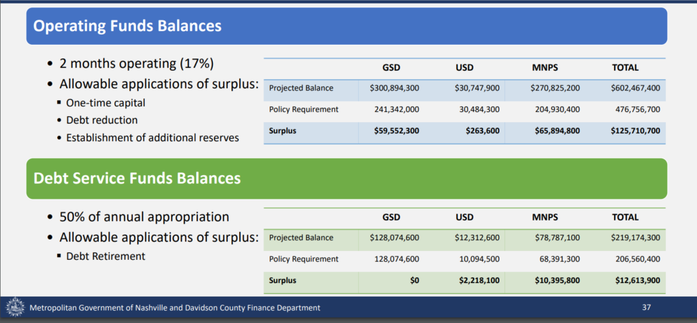
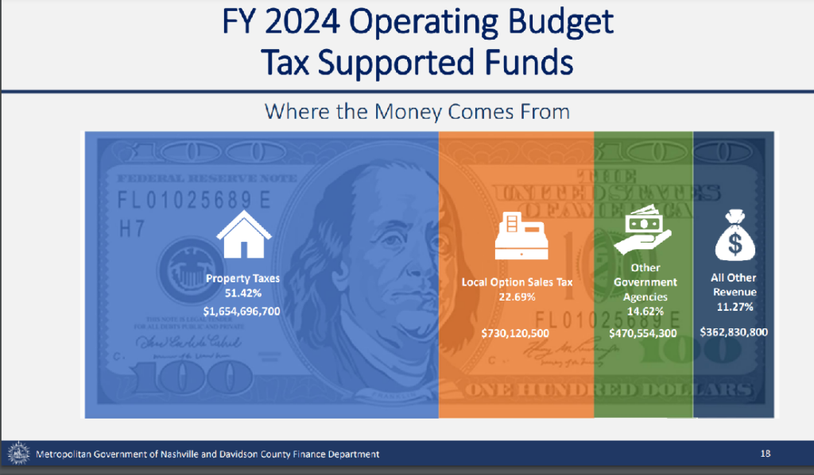
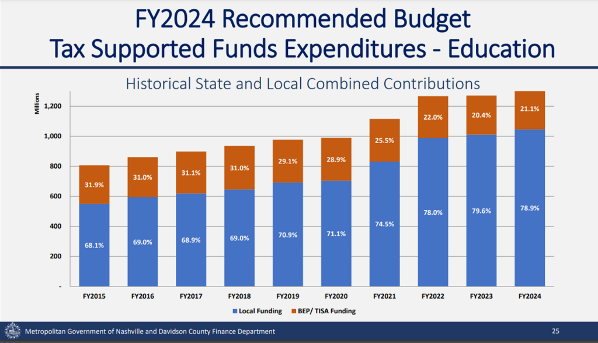
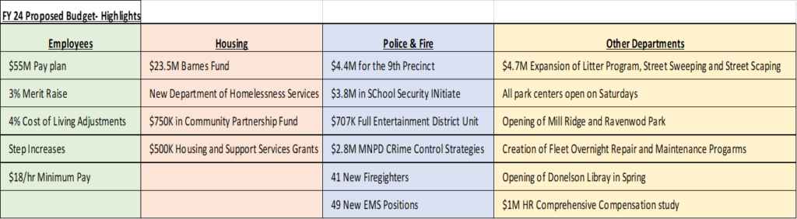
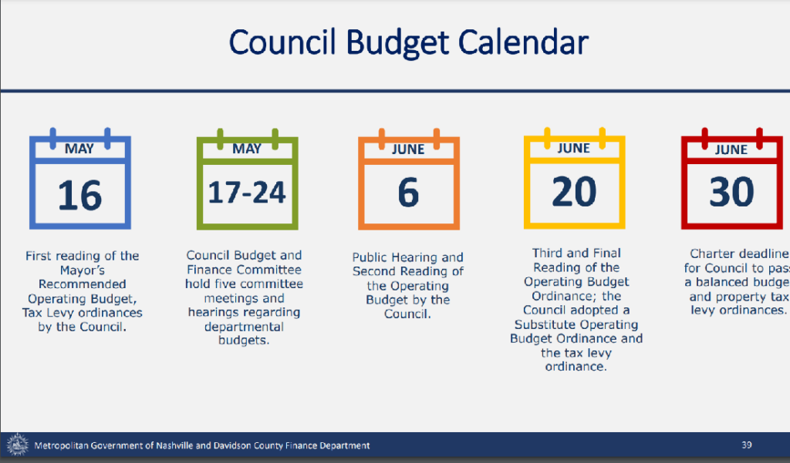
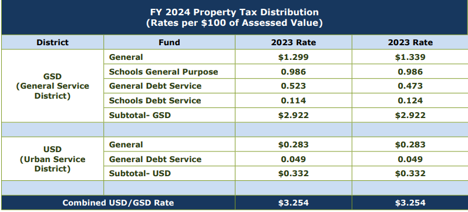
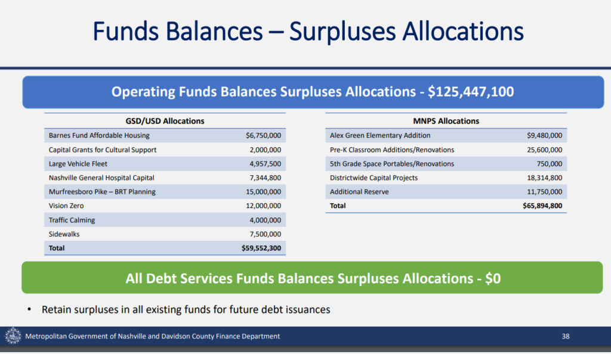
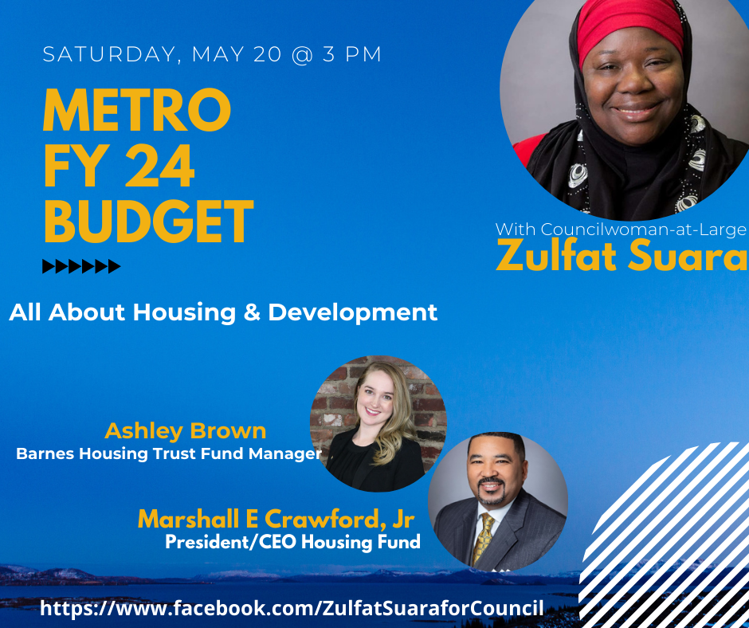
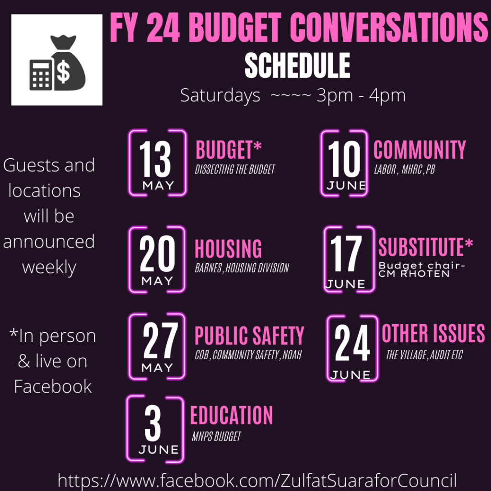

Dissecting Mayor Cooper’s FY 24 Budget
I am pleased to present my fourth and final Budget Conversation for my first term in office. When I campaigned for this office four years ago, I promised to enhance communication and transparency regarding the city’s activities. These Facebook conversations, which were subsequently turned into blog posts and newsletters, have allowed me to fulfill that promise. Another benefit of this series is that it has enabled me to gather input from constituents, resulting in numerous wish lists and budget amendments over the years.
As per tradition, the FY24 season began with the Mayor’s State of Metro address. This year’s address was particularly special for me as it was delivered at the new James Lawson High School in Bellevue. I am grateful to CM Dave Rosenberg, Eli & Carmen Foster, Keri Kidd Cannon, Rachel Elrod, and everyone else who helped make the renaming a reality. I’m proud to have played a small role in this change and excited about the future leaders that this school will foster, carrying on Dr. Lawson’s legacy.
Now, let’s return to the budget. On May 13, I was joined by my colleague and former Budget Chair – CM Kyonzte Toombs – as we delved deeper into the mayor’s budget. CM Toombs served as budget vice-chair and was the budget chair during the FY22 budget season. Here is a summary of our conversation.
GENERAL OVERVIEW OF THE BUDGET:
The standout feature of this year’s budget is the Fund Balance. The FY24 budget indicates that Metro’s fund balance is at its highest level in a while. In FY21, Metro’s fund balance was at $88M, or 4.3% of revenue, falling short of the metro policy that mandates a minimum fund balance of 5%. This situation led to a visit from the comptroller and a property tax increase.
Today, the fund balance at the beginning of FY23 is now at 24.4% of the revenue of $633M.

What caused such a significant increase in the Fund Balance? Was it due to the property tax increase?
The property tax increase contributed, but another major factor was the conservative approach Metro adopted during the COVID pandemic. Revenues were projected conservatively, anticipating that COVID would lead to a reduction. However, despite the pandemic, we witnessed more revenue growth than expected. Spending patterns didn’t decrease; instead, there was a shift in how people spent their money, with increases in online shopping and home improvements.
Another contributing factor was the surge in federal funding. Like other local governments, Metro benefited from federal COVID relief. Expenditures that could be covered with local funds were shifted to federal funding, leading to an increase in the fund balance.
What is Fund Balance?
The Fund Balance is the total accumulation of operating surpluses and deficits since a local government’s inception, measured at a certain point in time. It’s calculated as ASSETS (what is owned) minus LIABILITIES (what is owed)
Why are we accumulating fund balance when Nashvillians are still suffering?
Spending the fund balance down to very low levels is what previously brought Metro to the state comptroller’s attention. But saving money while residents are suffering is equally problematic. It’s crucial to strike a balance.
Fund balance policies are important for Metro. They guide the maintenance of adequate Unrestricted Fund Balance levels in each governmental fund, helping to mitigate current and future risks and ensure the continuity of government services. Following Fund Balance Reserve Policies signals to the community, rating agencies, and capital markets that the Metropolitan Government is well-managed and financially stable. It’s crucial that we do not unnecessarily deplete these funds.
However, it’s also true that we need to address the significant needs of our city’s residents. That’s why the mayor’s proposed budget includes a significant amount of spending on social services, infrastructure, education, and more. This spending is designed to directly benefit Nashvillians and enhance the quality of life in our city.
Is this a one-time surge in revenue or can we expect continued growth?
There are reasons to be optimistic about the future. However, we must remain cautious. Several one-time factors contributed to the growth in our fund balance, including federal COVID relief funds and conservative revenue estimates. As we move forward, it will be crucial to monitor economic indicators closely, continue prudent budgeting practices, and make strategic investments in our community.
To this end, the council passed an operating fund balance policy that requires that the fund balance be maintained at a minimum of 17%. The calculated operating surplus after this threshold can be used for one-time capital spending, debt reduction, and establishment of reserves, while the debt fund surplus can only be used for debt reduction
The policy also provides that any use that reduces the operating reserve below the minimum required 17% level, shall include a justification presented to the Metropolitan Council and shall require approval from a majority of Council Members.

PROJECTED REVENUES
The projected FY24 budget is $3.2B. This represents a $187M or 6.2% increase from the FY23 budget. Property tax revenue represents $1.7M or 51% of the total. Other revenue sources include local options sales tax of $730 million and other government agencies/grants of $471 million. And all other revenues, $363 million.
| Property Taxes | $1, 654, 696,700 |
| Local Option Sales Tax | $730,120,500 |
| Other Government Agencies | $470,554,300 |
| All Other Revenue | $362,830,800 |
| Total Revenue Projection | $3,218,202,300 |
It is important to note that the increase in property tax revenue is due to new development (both residential and commercial).

PROJECTED EXPENSES
The major expense categories for FY24 are as follows: Education at 36%, Debt Services at 13%, and other metro departments combine to make up the remaining 50%.
MNPS will receive funding of $1.2B, representing a $99M increase from the FY23 budget. This $99M includes a $53M allocation for continuity of service, which guarantees that school funding in the current year remains consistent with the previous year. This takes into account inflation to ensure that school services are not disrupted.
The $53M allocated for continuity of service covers step increases for certificated and support staff, increased fringe benefit costs, and inflationary increases (e.g., fuel). This also includes payments to charter schools, which are deducted from the top of the budget.
In essence, continuity of effort equates to the previous year’s budget, plus whatever additional funds are necessary to maintain the current level of service – for FY 24, that’s $53M. It’s important to note that while the MNPS budget continues to increase yearly, the state’s funding contribution, unfortunately, continues to decline.
Ironically, Tennessee’s Maintenance of Effort law prevents local funding from decreasing year to year, even if state funding increases. For Davidson County, as state funding continues to decrease, the Metro Government must cover the shortfall each year. Council Member Toombs has pointed out that the state ideally should be funding 40% of MNPS, but is currently only funding 20%, leaving the metro to make up the difference.
The additional $46M above the continuity of effort requirement includes a 4% Cost of Living Adjustment (COLA) for all employees, Universal Free Lunch ($8M), an Administrative Pay Study ($5.9M), and Classroom Associates ($10.8M).

OTHER HIGHLIGHTS
Below is a list of other major highlights from the FY24 proposed budget.

To access information on the budget google “Metro Finance Citizens Budget” or follow this LINK.
The mayor’s budget is now before the council, with a public hearing and a second reading on June 6th. Council still has time to make adjustments to the budget and vote on the final rate no later than June 30. You can access the FY 24 Budget calendar here.

Q & A
How do we support this increase in expenses, is there a tax increase this year?
No, state laws prohibit cities/counties from collecting more taxes on existing properties than in prior years unless a new tax rate is officially voted on and increased by the council. Therefore, the growth in property taxes is due to the anticipated increase in property taxes from new development. The mayor’s budget maintains the same tax rate as in FY 23.

MNPS funding includes $10.8M for classroom aid. Is this the same as substitute teachers?
The $10.8M is not necessarily for substitute teachers. This is for classroom aids, individuals who assist the teachers and can step in as a substitute if necessary. Metro School currently faces challenges finding substitute teachers. If a teacher is absent, some schools’ practice is to distribute the students among the remaining classrooms of the same grade. The proposed aid position would ensure there is always someone available to take over if needed.
Our June 3rd budget conversations will be with MNPS budget chair- Freda Player and we can explore the issue further.
he Housing Task Force recommended a $30M annual funding for Barnes Fund, but the mayor’s budget is only $23.25M. Why?
It is recommended that an additional $6.75M from the fund balance surplus be allocated to the Barnes Fund to meet the $30M goal.
Can you talk more about the mental health initiatives- Partners in Care and REACH?
The Partners in Care program was established 2 years ago as a pilot. It’s a model that has mental health professionals responding to emergency calls alongside police officers. The program is currently in 5 precincts, and the FY24 budget allows for the addition of 2 more. Studies show that having police officers answer distress calls involving individuals with mental health issues sometimes escalates the situation. With the Partners in Care program, only 3% of calls have resulted in arrests- showing the effectiveness of the program.
Another program, Responders Engaged and Committed to Help Program (REACH), is also included in the FY24 budget. This program, advocated for by NOAH, is a non-law enforcement model in which only mental health professionals respond to calls, with no police officers present.
Tell us about the Kurdish interpretation services
The FY24 budget includes funding to provide Kurdish translation by closed-caption for Metro Council meetings. This is to better serve Nashville’s large Kurdish population and ensure their engagement in civic matters.
What about debt service?
Metro Council has passed two policies relating to debt management. One is a ceiling on debt at no more than 17% of revenue. The FY 24 Debt service budget of $410M equates to 12.74% of projected revenue. The second policy ensures that the debt service fund balance is maintained at 50% of annual debt appropriations. Any surplus in the debt fund balance can only be used for debt retirement.
Who decides what to do with the fund balance surplus?
The fund balance surplus, calculated at $125M, is divided between MNPS ($65M) and Metro ($60M). While the mayor has proposed some uses for the surplus in his budget, the council has the opportunity to reallocate it. Metro council is considering how to distribute these funds equitably.
See below for the mayor’s proposed use of the balance. Let me know if you agree or if you have different suggestions

If you miss my Budget Conversation with CM Kyonzte Toombs, you can watch the entire episode at the link below.
NEXT BUDGET CONVERSATION
Same as last year, this year’s budget conversation will be every Saturday at 3 pm on Facebook until June 30th. My next conversation will be tomorrow, Saturday, May 20 at 3 pm, where we will be discussing all things Housing. Over the yrs, I’ve heard from churches that want to turn their lot into affordable housing but don’t know where to start & small developers interested in affordable housing. Please join us on Facebook live with your comments and questions at https://www.facebook.com/ZulfatSuaraforCouncil/


Please continue to stay engaged and share your thoughts and ideas about the budget and other important issues facing our city. I value your input and believe that open dialogue and collaborative decision-making are key to effective governance. Together, we can ensure a bright and sustainable future for our great city.
Stay tuned for future budget conversations and feel free to reach out if you have any further questions.
Thank you for joining us in this conversation.